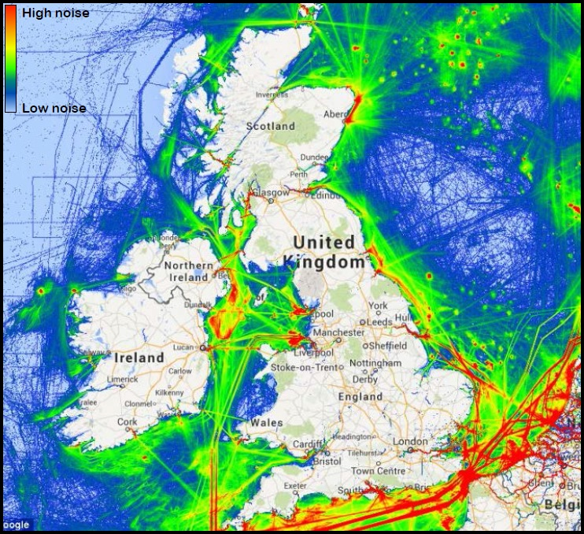
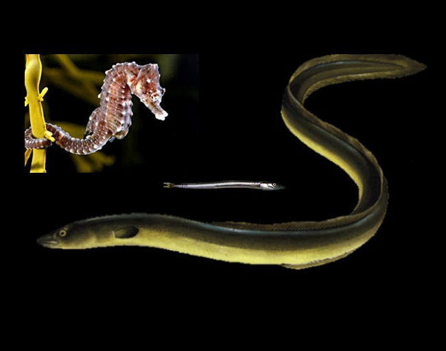

Background:
The most widespread source of marine anthropogenic noise pollution is from vessels 1,2. Higher levels of marine traffic have led to low-frequency background noise in the ocean increasing 32-fold since the 1950's 3. The worldwide commercial fleet, consisting of tankers, dry bulk vessels, container ships, and other large ocean-going vessels, has grown from approximately 30,000 vessels (~85,000,000 gross tons) in 1950 to 89,899 vessels (605,000,000 gross tons) in 2003 4,5. Worldwide non-commercial vessels, including recreational craft and private boats, have also increased, although no official log of actual numbers exists. Furthermore, port turn-around times are shorter resulting in ships spending more days per year at sea and vessels have greater average speeds, propulsion power, and propeller tip speeds 4-6. Sound levels were seen to increase by 15 dB between 1950 and 1975 as a direct result of shipping activities4. These trends are certain to continue, posing unique challenges for aquatic animals1.
The Lombard effect research:
Many fish species rely on sound, rather than vision, to decipher information about their surroundings, using ambient biotic and abiotic sounds emanating from objects to create an 'acoustic view' of the environment 7. Sound is an ideal means of communication in the aquatic environment as it can be propagated rapidly over great distances and is not attenuated as quickly as light or chemical signals 8,9. Fish use hearing to perceive and navigate their environment; to locate food, competitors, predators, and potential mates. Therefore, the ability to create and correctly interpret an auditory scene through the perception of intended and/or unintended acoustic signals in the environment is crucial for survival 10,11.
'Noise' (any sound that has the potential to negatively impact marine life) may have an explicit purpose - locating submerged objects, fish shoals, or measuring environmental features - or may be an unwelcome by-product of industrial activities such as the construction of infrastructure or the movement of vessels 12. Anthropogenic noise is especially deleterious to fish as it is often of frequencies within their hearing thresholds 13. Both physiological and behavioural effects have been observed in fish as a result of man-made noise sources 14. Masking - when the detection of one sound is impaired by the presence of another - has been proven to occur in terrestrial animals 15, and is possibly occurring in fish. Shipping creates large near-field background noise at levels similar to that of fish vocalisations, and in the same critical bandwidths, so noise pollution could directly affect the survival of fish populations by decreasing their ability to hear and respond to biologically important sounds.
Over 800 fish species from more than 109 families are known to vocalise, with many more suspected of doing so 16. Fish vocalise for a variety of reasons: to attract mates, to establish territory, whilst foraging or competing for food, as a fright response, or to aggregate for spawning and synchronise the release of gametes. Masking from anthropogenic sources can interfere with these vocalisations, or reduce the distance at which these biologically important vocalisations can be detected. This is because the introduced noise raises the ambient level and decreases the signal-to-noise ratio, thus reducing the signal detection distance and causing the detection of a signal to become more difficult 9. This masking effect could make it difficult for the fish to locate and communicate with conspecifics and prevent the biologically important sounds associated with successful courtship and reproduction from being heard.
Implications of noise on species of conservation importance:
Seahorse inhabit sea grass in the north, west and southern coastal areas of the UK. Through destruction of habitat and various illegal trades, seahorse are considered endangered and are a protected species in the UK. This project will study the effects of noise and vibrations on seahorse physiology and behaviours, and will investigate whether noise pollution is affecting dormant diseases often present in seahorse populations.
Implications of noise on species of commercial importance:
Classified as critically endangered on the IUCN Red List the European eel is believed to have declined by up to 95% over the last 25-30 years across Europe. This species must be conserved for sustainable fishing. European eel migrate over 6,000 km from/to their spawning grounds, so we propose to investigate the migration route of eels and produce a 'risk map' for the species, identifying areas of high noise impact where population decline is most likely to occur.
Implications of noise on keystone species:
Sand eel are a vital component of many food webs. Fish, birds and mammals rely on Sand eels for food; some are Sand eel dependant e.g. guillemots. Ocean warming and overfishing are causing a serious decline in Sand eel numbers. Noise and vibration from vessels, and pile driving during construction, might also be a contributing factor to their decline, and our study is designed to explore this hypothesis.
Outcomes:
This project aims to investigate the effects of vessel noise on fish; initially the implications of masking. An adaptation that can overcome the effects of masking is the Lombard effect - the change in the intensity, pitch, duration or rate of vocalisations in the presence of background noise in order to maintain a constant signal to noise ratio. If it can be proven that fish utilise the Lombard effect to remain audible to conspecifics, then reproduction can occur unhindered. If, however, the Lombard effect is not observed in fish, then the masking of vocalisations by anthropogenic noise should be regarded as a serious threat to vocalising fish species.
This research will determine whether fish populations can adapt quickly enough to survive in areas of noise pollution. If they cannot, there may be serious consequences for the fisheries industry. This EPSRC and FugroEMU Ltd funded project will provide research to aid in setting criteria necessary for legislation to limit levels of noise pollution from anthropogenic activities.